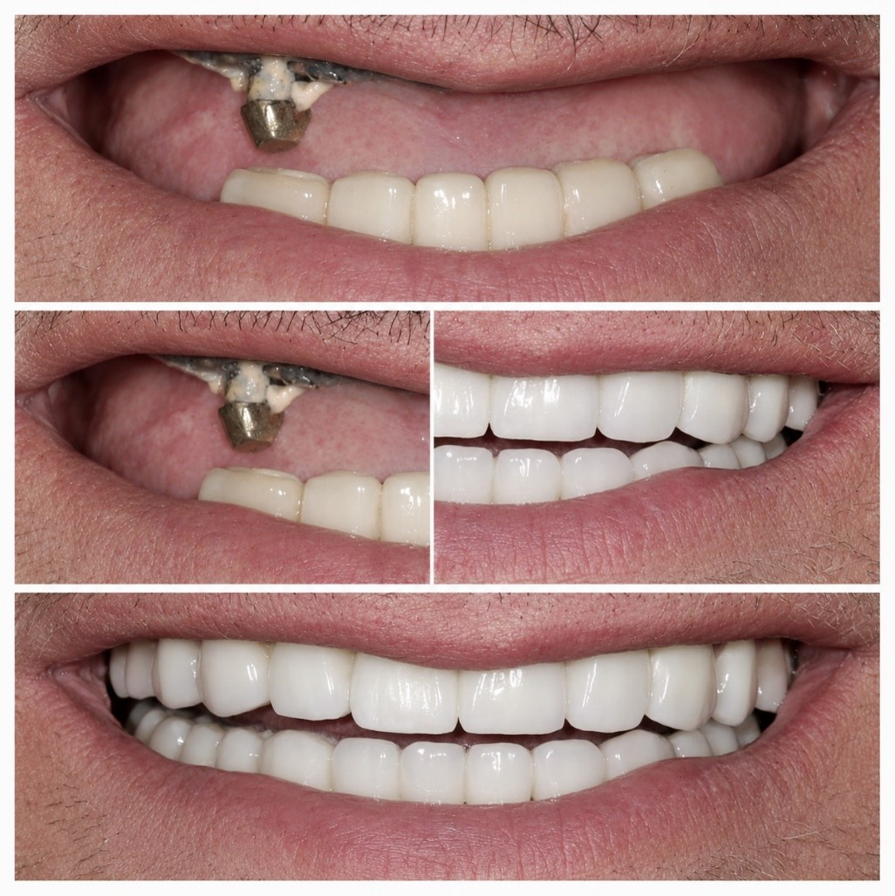

Coroane insurubabile
Solutii realizate in functie de platforma, angulare si spatiul disponibil.
Protetica pe implanturi
Lucrarile pe implanturi presupun corelarea platformei, componentelor, spatiului protetic, tipului de retentie si obiectivului estetic.

Directii de lucru
Solutii realizate in functie de platforma, angulare si spatiul disponibil.
Restaurari hibride si componente alese pentru cazul clinic.
Contur si emergenta adaptate obiectivului protetic si estetic.
Planificare tehnica pentru cazuri multiple si restaurari insurubabile.

Informatii utile pentru caz
Compatibilitate
Compatibilitatea exacta se confirma pentru fiecare caz si componenta.
Caz pe implanturi